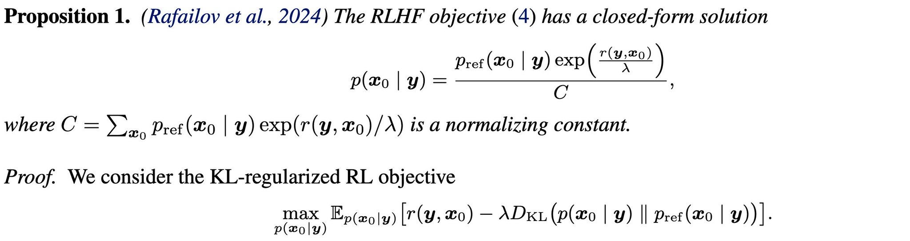
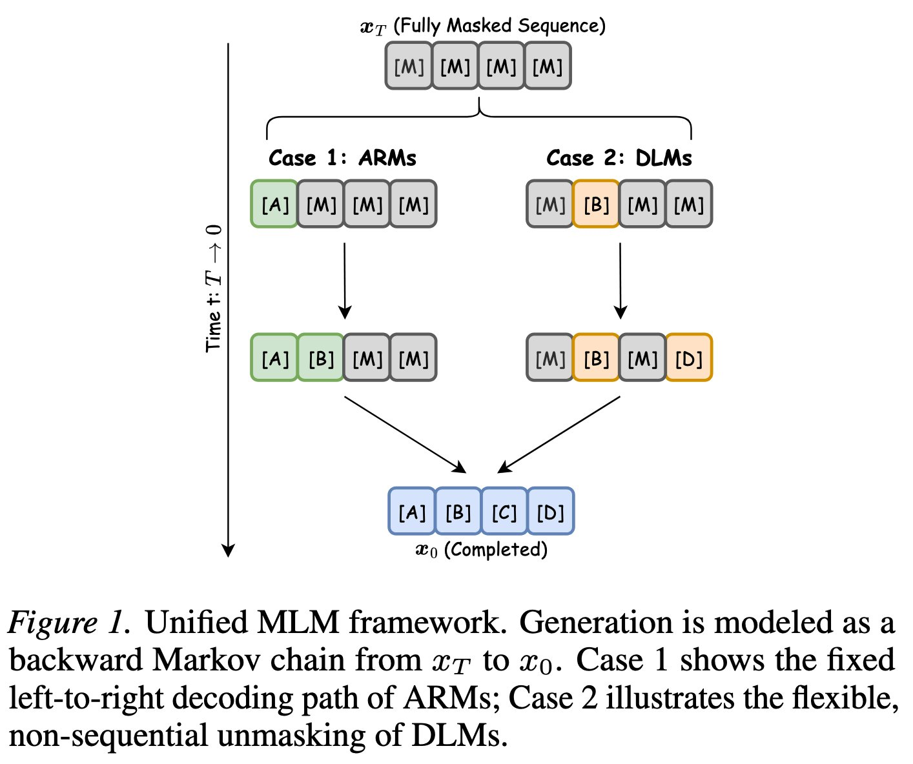
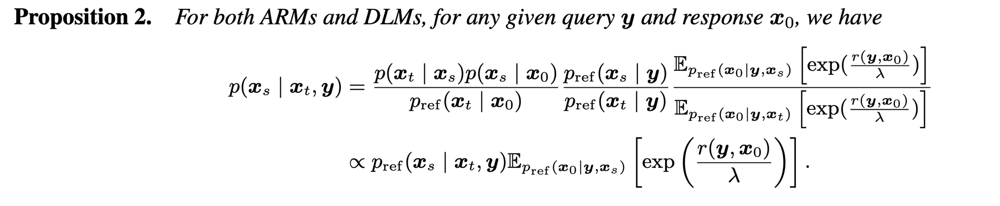
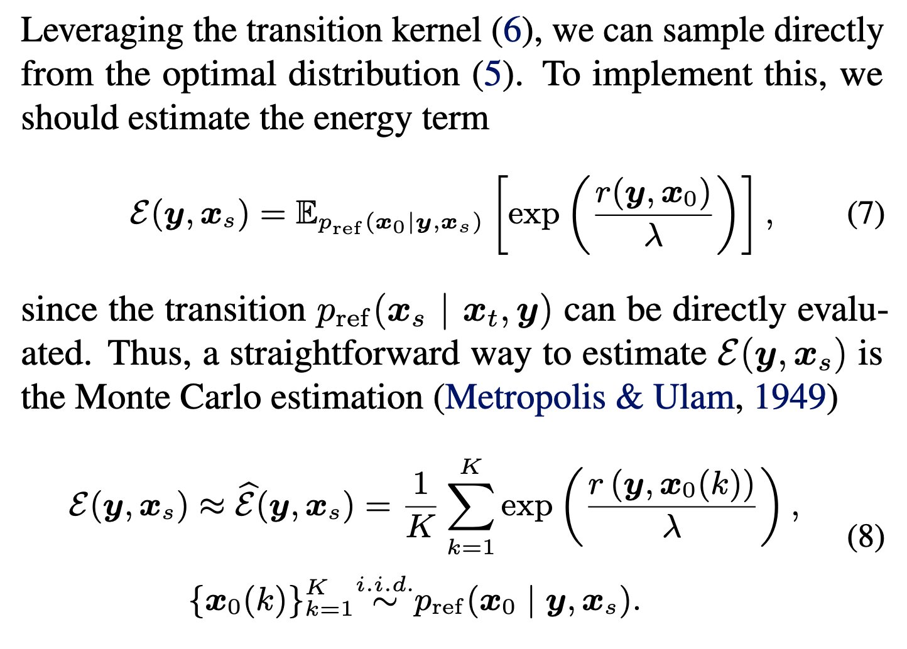
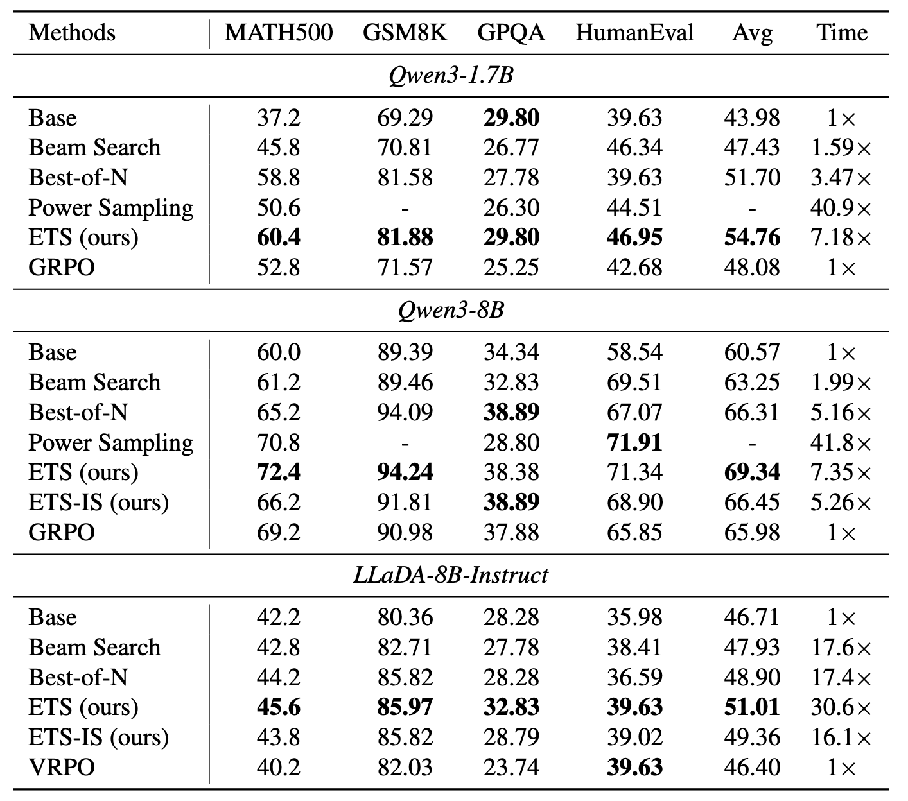
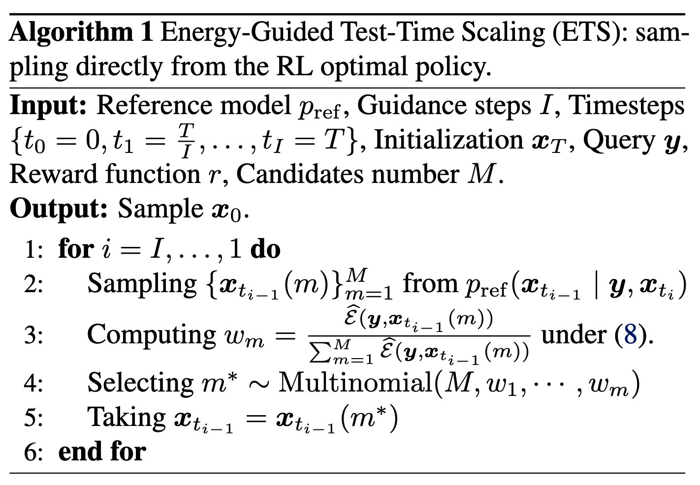
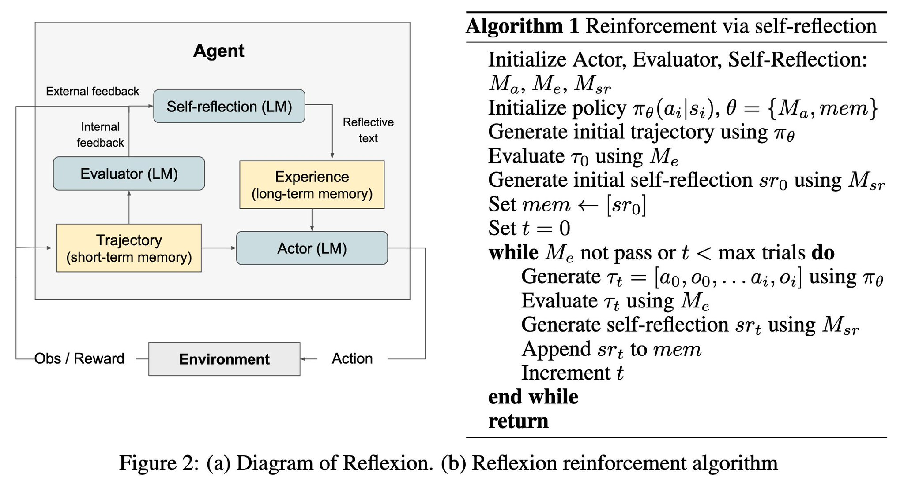
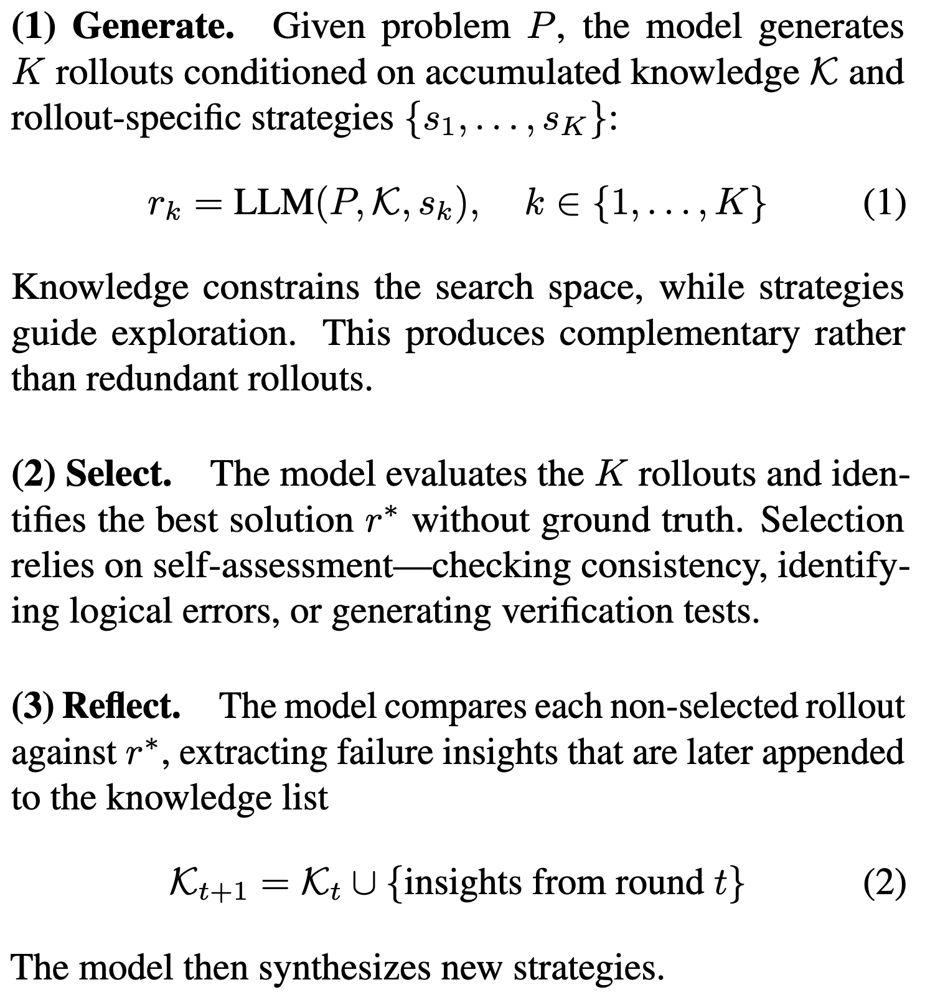
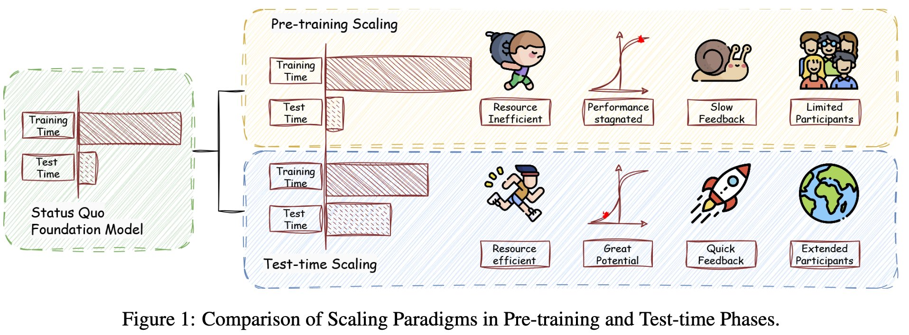
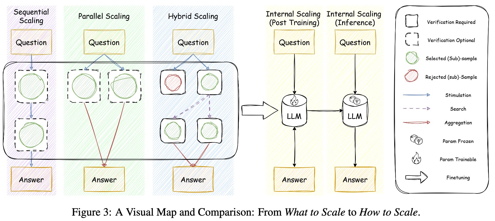

Test-Time Scaling 与 Training-Free RL
这篇 X Article 的核心不是“多采样就会更强”，而是把 RLHF/GRPO 的 KL 正则目标重新解释成一个可在推理时采样的目标分布：训练不更新参数，推理时用 reward 或自评估把基础模型的候选轨迹重加权。
它到底在解决什么问题
这篇文章真正关心的是一个工程问题：当 RL post-training 很贵、很不稳定、reward 又经常变化时，能不能不训练模型，而是在推理时直接朝 RL 最优策略采样？
训练成本
RLHF、PPO、GRPO 需要 rollout、reward 计算、梯度更新、超参调试和稳定性处理。每换一个 reward 设计，理论上都可能需要重新训练或校准。
推理信号浪费
Best-of-N、Self-Consistency、beam search 能生成多个候选，但普通选择规则经常很粗糙：多数投票不等于 reward 最优，beam search 容易被局部高概率路径限制。
模型能力未被挖出
文章延续 “base model is smarter than you think” 的观点：base model 的采样空间里可能已经包含高质量答案，问题是如何用有限计算更高效地把它们抽出来。
关键转译：RL post-training 是把 reward 写进参数；training-free RL 是在不改参数的情况下，把 reward 写进采样过程。前者把计算花在训练期，后者把计算花在推理期。
TTS 的四条路线
原文把 TTS 分成四类。这个分类有一个隐含轴线：是只改变解码时的搜索结构，还是让模型学会管理自己的推理预算和自评估？
| 路线 | 典型方法 | 核心动作 | 和 RL 的关系 |
|---|---|---|---|
| Sequential Scaling | CoT、Atom-of-Thoughts | 让单条答案内部产生更长的思考轨迹。 | 更像推理模板扩展，本身不是严格意义上的 TTS 搜索。 |
| Parallel Scaling | Best-of-N、Self-Consistency | 对同一问题生成多个答案，再按 verifier 或多数投票选一个。 | 如果选择器近似 reward，就开始接近 RL 的“偏好最大化”。 |
| Hybrid Scaling | Tree-of-Thoughts、beam search、MCTS | 在 token、block 或 step 层面分叉和剪枝。 | 把整条回答的 reward 下沉到中间状态，接近 sequential decision making。 |
| Internal Scaling | learned self-evaluation、budget control | 通过训练或后训练让模型知道何时思考、如何自检。 | 更接近真正的策略学习，但不再完全 training-free。 |
ETS 如何把 RL 变成采样
ETS 的机制核心是 KL-regularized RL 的闭式解。给定 reference model 和 reward，最优策略不是凭空出现的，它可以写成 reference distribution 乘上 reward energy，再归一化。
这个目标表达了两件事：一方面希望输出获得高 reward，另一方面不能离基础模型太远。这里的 \(\lambda\) 控制 reward 推动和 reference model 保守性的权衡。
这条公式是“training-free RL”的数学入口。它说明：如果你能从 \(p_{\mathrm{ref}}\) 中抽样，并且能评价完整输出的 reward，那么理论上可以通过重加权采到更接近 RL 最优策略的样本。难点在于 \(C\) 是全空间归一化常数，直接求不可行；ETS 绕开 \(C\)，在每个候选 batch 内做相对能量归一化。


把生成看成状态转移
不是一次性生成完整答案，而是把生成过程写成 \(x_T \to x_{T-1} \to \cdots \to x_0\)。ARM 是从左到右补 token；DLM 是从 masked sequence 逐步 unmask。
对当前状态采样候选
在某个 guidance step，从 reference model 采出 \(M\) 个候选中间状态。每个候选代表一个可能的局部继续方向。
用 Monte Carlo 估计 energy
对每个候选，再采 \(K\) 个完整 continuation，计算 reward 后估计 \(\mathbb{E}[\exp(r/\lambda)]\)。这就是候选状态“未来能走向高 reward 输出”的期望。
按 energy 重采样
把候选 energy 在 batch 内归一化，用 multinomial sampling 选择下一状态。直觉上：reference model 负责提出候选，reward energy 负责把概率质量推向高价值方向。
用 ETS-IS 降低成本
标准 ETS 的瓶颈是 Monte Carlo continuation 太贵。ETS-IS 用小模型或加速模型作为 proposal，再通过 importance sampling 做校正，试图在速度和理论一致性之间折中。
ETS 的最小伪代码
for each guidance step:
candidates = sample M partial continuations from reference model
for candidate in candidates:
rollouts = sample K full continuations conditioned on candidate
energy[candidate] = average(exp(reward(rollout) / lambda))
next_state = sample candidates proportional to energy
return final response

实验到底证明了什么
ETS 论文主要在 pass@1 设置下评估数学、推理、代码和科学问答。需要注意：这些结果证明的是“在给定 reward/自一致性 verifier 和推理预算下，采样策略更有效”，不是证明它可以替代所有后训练。
| 模型 | Base Avg | Best-of-N Avg | ETS Avg | ETS-IS Avg | RL baseline | 读法 |
|---|---|---|---|---|---|---|
| Qwen3-1.7B | 43.98 | 51.70 | 54.76 | 未报告 | GRPO 48.08 | 小模型上 ETS 比简单并行采样和 GRPO 更有效，但相对推理时间为 7.18x。 |
| Qwen3-8B | 60.57 | 66.31 | 69.34 | 66.45 | GRPO 65.98 | 标准 ETS 峰值最好；ETS-IS 更快但性能略低，适合预算受限场景。 |
| LLaDA-8B-Instruct | 46.71 | 48.90 | 51.01 | 49.36 | VRPO 46.40 | DLM 上也有增益，但延迟明显更高，说明算法形态可迁移，部署成本仍受模型范式影响。 |


实验结论的边界：论文的任务是 pass@1 输出质量，输入是数学/代码/科学问答等可抽取最终答案或可验证的任务，输出是文本或代码；指标主要是 accuracy，评估对象是最终答案是否正确。它不直接评估开放式偏好、长周期 agent 成功率、工具调用安全性或生产吞吐成本。
为什么不是普通 Best-of-N
Best-of-N 通常先采完整答案，再一次性选最优；ETS 在中间状态多次 guidance，每一步都用候选未来 rollout 的 energy 重加权。论文指出当 \(I=1\) 且 \(\lambda \to 0\) 时，ETS 会退化成 Best-of-N。
为什么 verifier 噪声很关键
如果 self-consistency 或 reward proxy 不能区分正确轨迹，额外采样会放大错误选择。论文附录比较 token confidence、entropy、self-certainty 与 self-consistency，认为 self-consistency 的 reward distribution 更接近 ground truth reward。
TTS 与自我进化不是一回事
原文后半部分把 ETS/Power Sampling 这类 TTS 与 Reflexion、TTRL、RSE 放在一起比较。这个比较很重要，因为它避免把所有“测试时变强”的方法混成一类。
| 路线 | 是否重算 rollout | 是否更新状态 | 是否更新参数 | 更像什么 |
|---|---|---|---|---|
| 狭义 TTS | 通常不反复重算 | 只在当前采样树或候选集中更新 | 否 | 推理时搜索 |
| Reflexion | 会多轮尝试 | 更新 prompt、reflection、memory | 否 | 不改参数的经验记忆 |
| TTRL / Test-Time RL | 会多轮 rollout | 可能更新训练样本、LoRA 或梯度状态 | 可能 | 测试时小规模学习 |
| RSE / Experience Distillation | 会递归利用轨迹 | 把有用轨迹片段蒸馏进后续 prompt | 通常否 | 经验筛选与递归提示 |


哪些地方不能过度解读
Training-free RL 这个说法很有吸引力，但它容易被误读成“没有训练成本，所以几乎免费”。更准确的说法是：不做参数训练，但把大量成本和风险移动到了推理时搜索、reward 估计和 serving 系统。
1. 它不解决 reward 本身
ETS 需要 reward。数学题可以用 self-consistency 或答案抽取近似；偏好、安全、风格、agent 任务成功率则很难只靠多数投票。reward 如果错，energy guidance 会把错方向放大。
2. 它不是持久学习
狭义 ETS 不更新参数。它能在当前 query 上选得更好，但不会让模型下一次天然更懂这个任务。要获得持久能力，需要记忆、prompt 更新、LoRA/梯度更新或重新训练。
3. 推理成本会成为产品瓶颈
论文里的 ETS 时间倍率可达多倍到几十倍。离线 benchmark 可以接受，在线产品要考虑排队、GPU 利用率、尾延迟、预算控制和失败回退。
4. 可验证任务更占优势
数学、代码、选择题天然适合 verifier。开放式创作、复杂工具调用、多目标偏好和安全约束任务，reward 更稀疏、更主观，也更容易被采样策略 exploit。
我会避免的误解：ETS 不是“RL 过时了”，也不是“训练完全不需要了”。它更像一个推理时 reward-aware sampler，可以在不改模型的前提下模拟 KL 正则 RL 目标的采样效果。长期能力、行为内化和大规模部署效率仍然是训练路线的优势。
对研发有什么实际启发
如果把 ETS 当成一个系统组件，而不是单篇论文方法，它给出了一个很实用的研发框架：把“模型是否会”拆成 proposal、search、verifier、budget controller 四个可替换模块。
先判断任务是否有可靠 verifier
有标准答案、单元测试、执行器、模拟器、规则检查器的任务最适合。没有 verifier 的任务，先做 reward audit，而不是先堆采样数。
把 pass@k 和 pass@1 同时看
如果 pass@k 高而 pass@1 低，说明模型分布里有好答案但选择器弱，TTS/ETS 值得试；如果 pass@k 本身低，搜索很可能只是贵的随机试错。
用小模型或缓存优化 energy estimation
ETS-IS 的意义在于把昂贵 rollout 的一部分交给 proposal，再做校正。工程上可以继续结合 vLLM batching、早停、KV cache、异步调度和任务级预算控制。
为不同任务设不同采样策略
代码题可以用测试执行器；数学题可以用自一致性和答案解析；agent 任务可以用环境状态 diff；偏好任务需要 reward model 或 pairwise judge。不要把同一种多数投票套到所有任务。
真正新的东西是什么
我认为这篇 X Article 的价值不在于提出“多花推理算力会变强”这个常识，而在于给 TTS 和 RL 之间建立了一条可推导、可实现、可评估的桥。
理论层面
它把 KL 正则 RL 的最优策略写成 reference model 与 reward energy 的乘积，让“训练后的策略”变成“推理时可近似采样的分布”。这使 TTS 从 heuristic search 升级为目标分布采样问题。
系统层面
它把后训练的不稳定性换成推理系统的可控复杂度：候选数 \(M\)、rollout 数 \(K\)、guidance step \(I\)、\(\lambda\)、proposal model 和异步调度，都可以变成服务端 policy。
最终判断：Training-free RL 最适合作为“快速适配 reward 的推理层”，而不是训练 pipeline 的完全替代品。它的最佳应用场景是：已有 strong base model，任务有较可靠 verifier，pass@k 显著高于 pass@1，且业务愿意用更多推理预算换更高单次成功率。反过来，如果任务没有可验证 reward，或生产延迟预算很紧，ETS 可能只是把训练难题推迟到线上。
复现与进一步阅读
- ETS 论文 PDF 本地副本：2601.21484-ets.pdf
- ETS GitHub README 本地副本：ets-readme.md
- MH-LLM README 本地副本：mh-llm-readme.md
- 公开材料：X Article、ETS 论文、GitHub README 与相关实现 README
术语解释与概念边界
- Training-free RL
- 不更新模型参数，而是在测试时通过采样、筛选、重排或搜索模拟强化学习式改进。
- Test-time scaling
- 把更多计算放到推理阶段，例如多样采样、验证和搜索。它用延迟与成本换取更高成功率。
- Reward model / verifier
- 用于判断候选输出好坏的外部信号。没有可靠 verifier，测试时搜索容易选出看似合理的错答案。
- 候选多样性
- 搜索收益来自不同路线的比较；如果候选高度相似，增加采样数只是在重复同一种错误。
证据边界与资料索引
原始 X 主帖只有一个短链，短链指向 X Article。本文以 X Article 正文为主材料，并用 ETS 论文 PDF、GitHub README 和相关实现 README 交叉核验。

